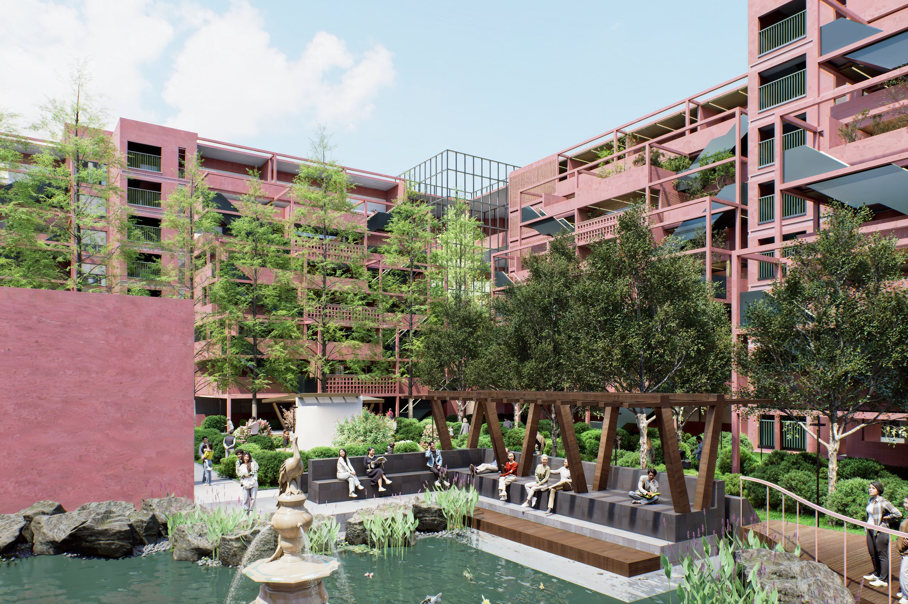
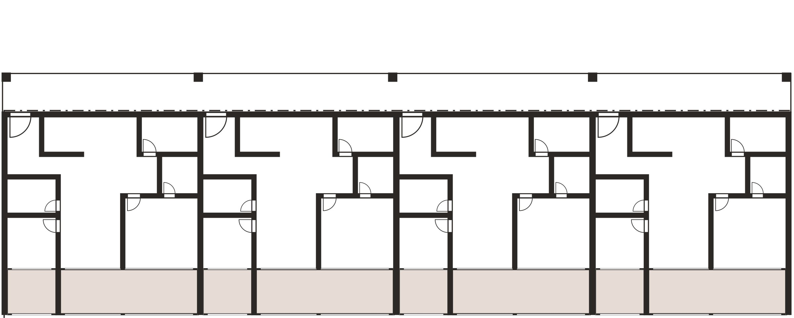
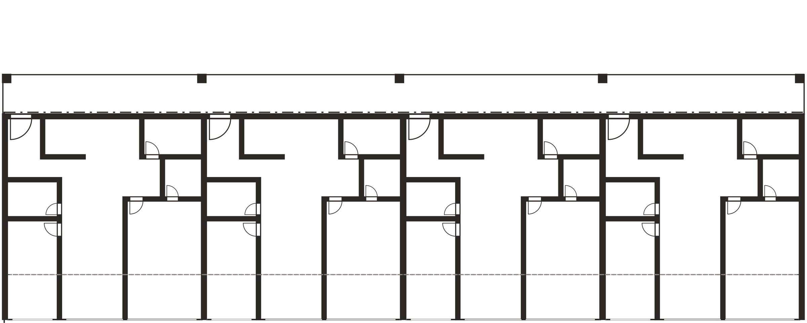
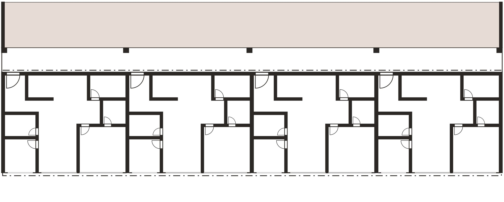
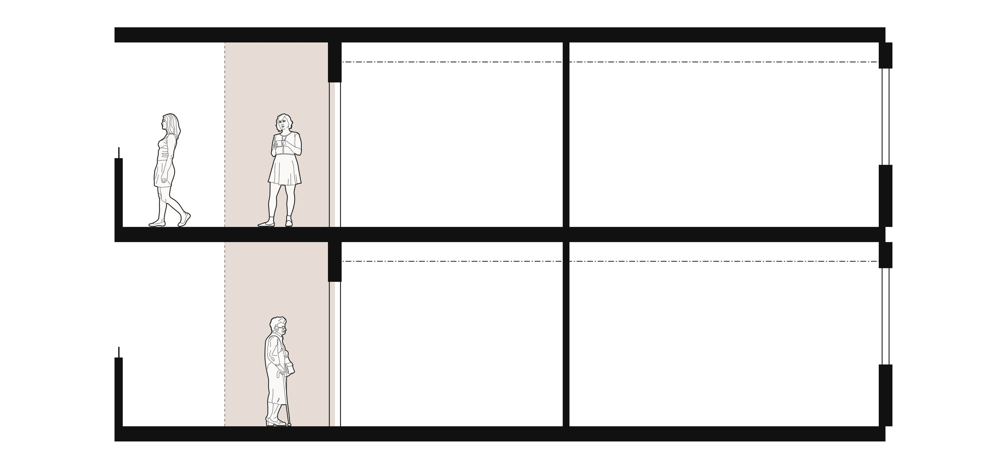
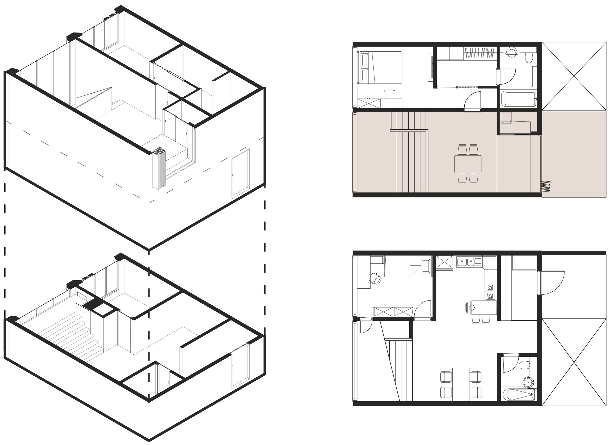
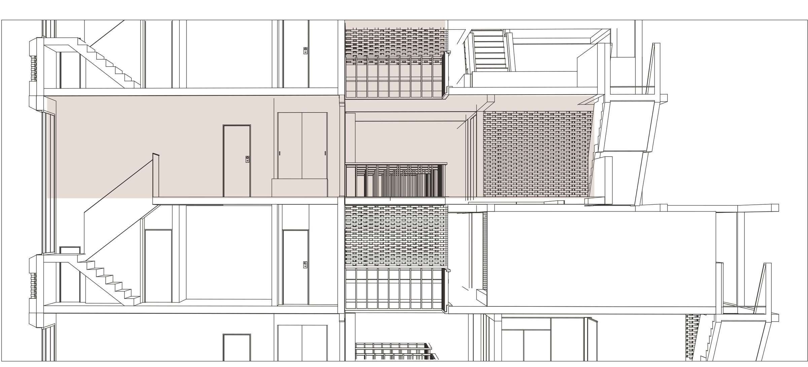
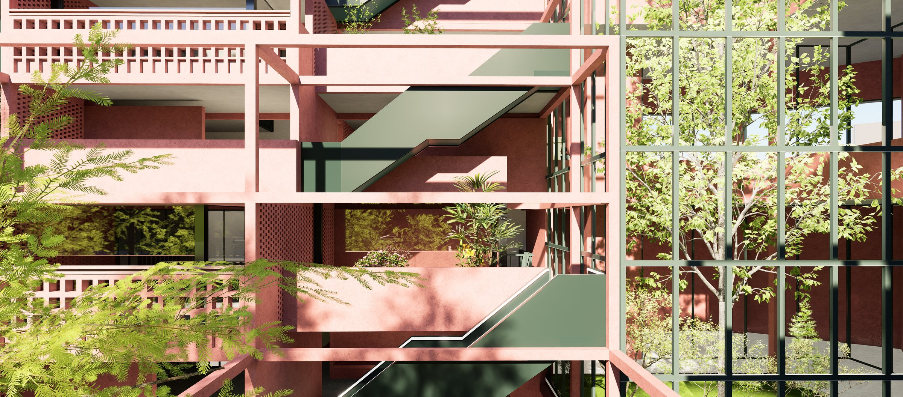
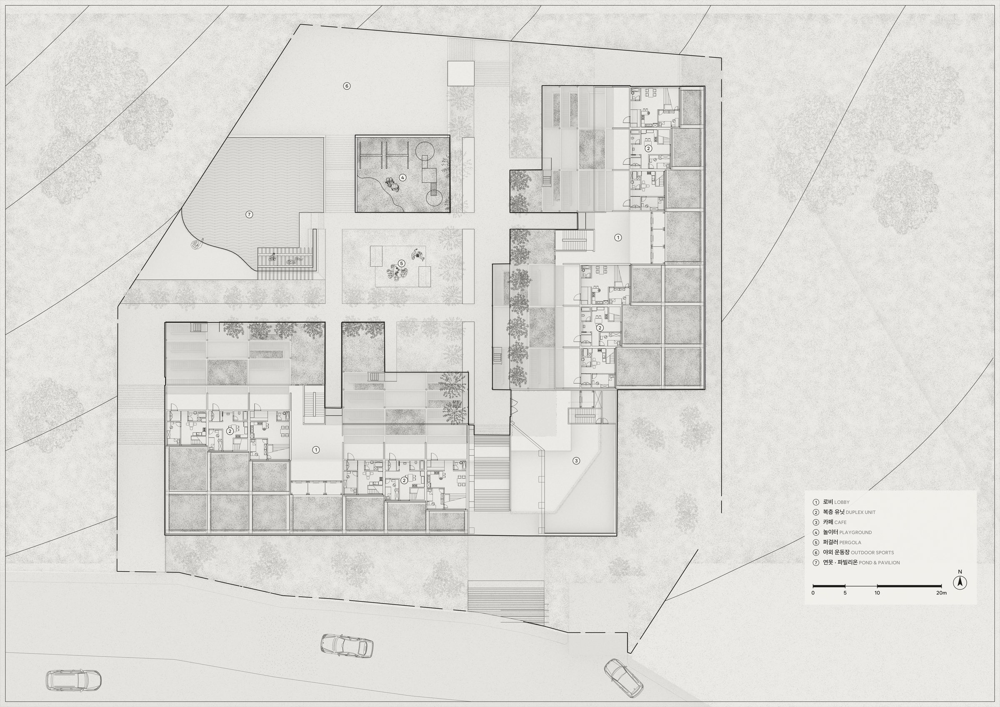
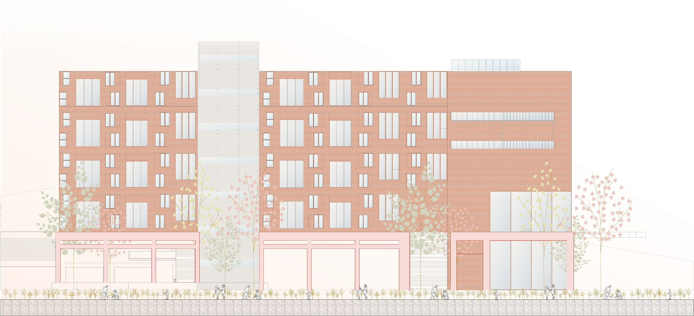

ALLEY HOUSE
- Location
- 서울 관악구 난향동
- Year
- 2025
- Type
- 집합주거
- Status
- 4학년 1학기 설계스튜디오
- Team
- 개인
확장되어 사라진 발코니를, 확장할 수 없는 복도로 옮긴다
한국 아파트의 세대 발코니는 대부분 확장되어 실내가 되었다. 이 집합주거는 발코니를 확장할 수 없는 공용 복도 쪽으로 옮긴다. 복층 유닛의 위층 폴딩도어를 열면 방이 복도까지 넓어지고, 복도는 주민이 머물고 아이들이 노는 골목이 된다. 복도에 붙은 계단과 공용 공간이 위아래 층을 묶고, 두 골목이 만나는 결절에 아트리움과 공용시설을 둔다.

복도는 골목이 된다The corridor becomes an alley
옮겨진 발코니가 층마다 복도에 쌓이면, 복도는 이웃이 마주치고 아이들이 노는 골목이 된다. 골목은 계단처럼 내려가 중정에서 모인다.
발코니를 복도로 옮기다Moving the balcony to the corridor
세대 안의 외부는 늘 확장되어 사라졌다. 확장할 수 없는 자리, 공용 복도로 옮기면 외부는 남고 복도는 골목이 된다.







열면 방이 복도가 된다Open, the room becomes the corridor
세대는 복층이다. 1층은 닫힌 생활의 층, 2층은 폴딩도어로 복도 쪽 발코니와 맞닿는다. 문을 열면 거실이 복도까지 넓어지고, 닫으면 다시 집이 된다.



두 골목이 꺾이는 자리에 마당이 생긴다
L자 매스의 두 복도 골목이 만나는 결절에 아트리움과 공용시설을 모았다. 모든 세대의 현관과 복도 측 발코니가 이 골목을 향한다.



골목이 만나는 결절은 입면에서 유리 아트리움이 된다
테라코타로 감싼 두 주거 매스 사이에 유리 아트리움을 세워 L자의 꺾임을 드러냈다. 아트리움은 공용시설과 계단을 품고 층마다 복도 골목을 수직으로 잇는다.

복도가 층마다 다른 골목이 된다
세대 발코니를 공용 복도 쪽으로 옮기자, 복도는 지나가는 통로에서 머무는 골목이 되었다. 복도에 붙은 계단과 공용 공간이 위아래 층을 잇고, 층마다 골목의 깊이가 달라진다. 고층은 전망을, 저층은 전망 대신 넓은 공용 공간을 나눠 갖는다.